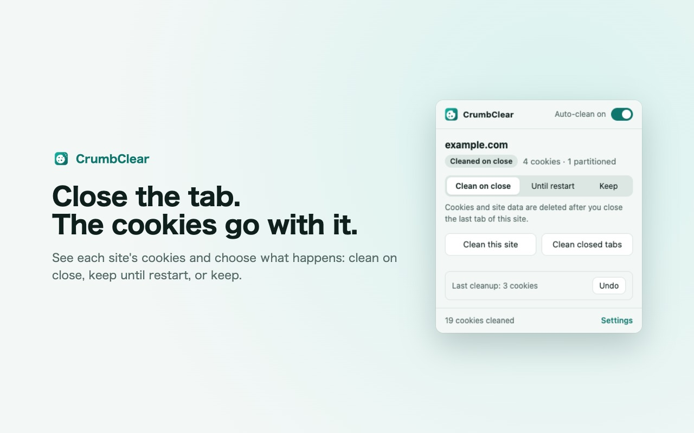
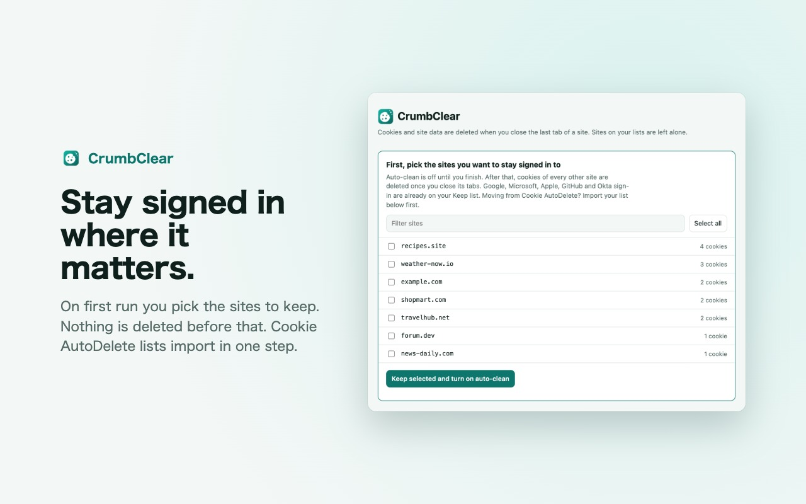

Close the tab.
The cookies go with it.
CrumbClear deletes a site's cookies and site data when you close its last tab. Sites you trust stay logged in. Free, open source, no tracking.
Add to Chrome, it's free
What it does
Moving from Cookie AutoDelete
- In Cookie AutoDelete, open Settings and choose Export.
- Install CrumbClear. Its settings page opens on its own.
- Under Import and export, choose Import lists… and pick the file. The whitelist becomes Keep, the greylist becomes Until restart.
CrumbClear is an independent project, not affiliated with Cookie AutoDelete.

FAQ
Is CrumbClear a Cookie AutoDelete alternative for Manifest V3?
Yes. It is built for Manifest V3 and imports Cookie AutoDelete exports in one step.
Will it log me out of everything?
No. Nothing is deleted after install until you pick the sites to keep. Google, Microsoft, Apple, GitHub and Okta sign-in are kept from the start, and sites open in any tab are never cleaned.
Does it delete partitioned (CHIPS) cookies and site data?
It deletes partitioned cookies of the closed site and, if you leave the option on, its localStorage, IndexedDB, cache storage and service workers.
Can I undo a cleanup?
Yes, from the popup, for 10 minutes after the last cleanup. The removed cookies are held in memory only.
Does it collect any data?
No. See the privacy policy.
Does it work in Edge or Firefox?
It works in Chrome and other Chromium browsers such as Edge and Brave. There is no Firefox version yet.